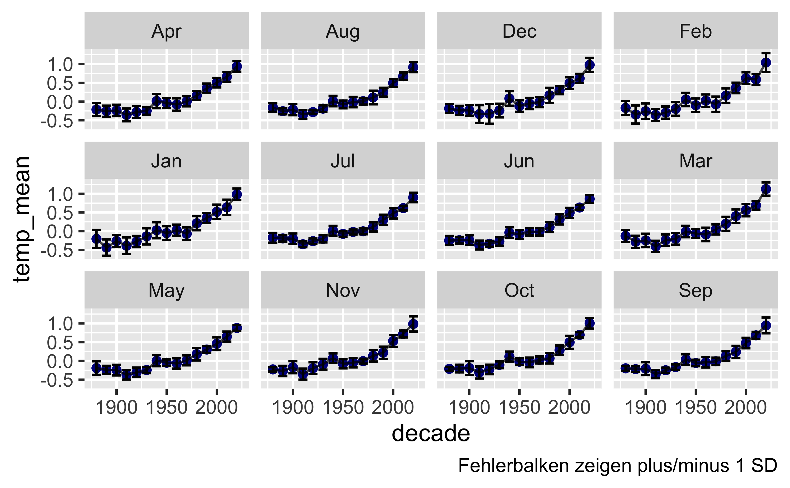
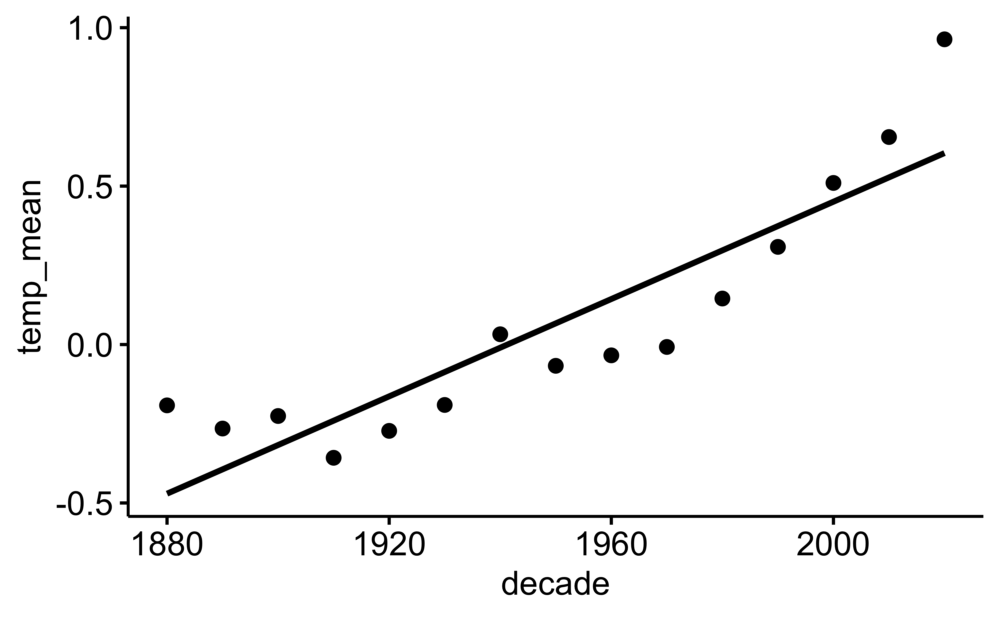
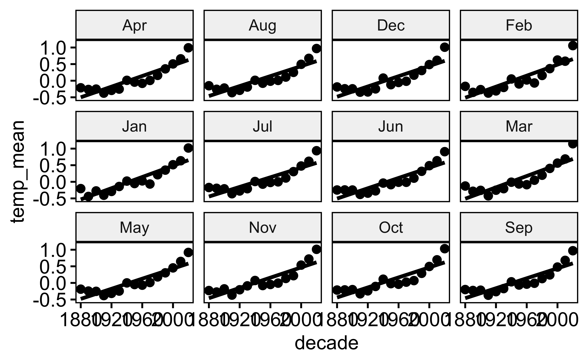
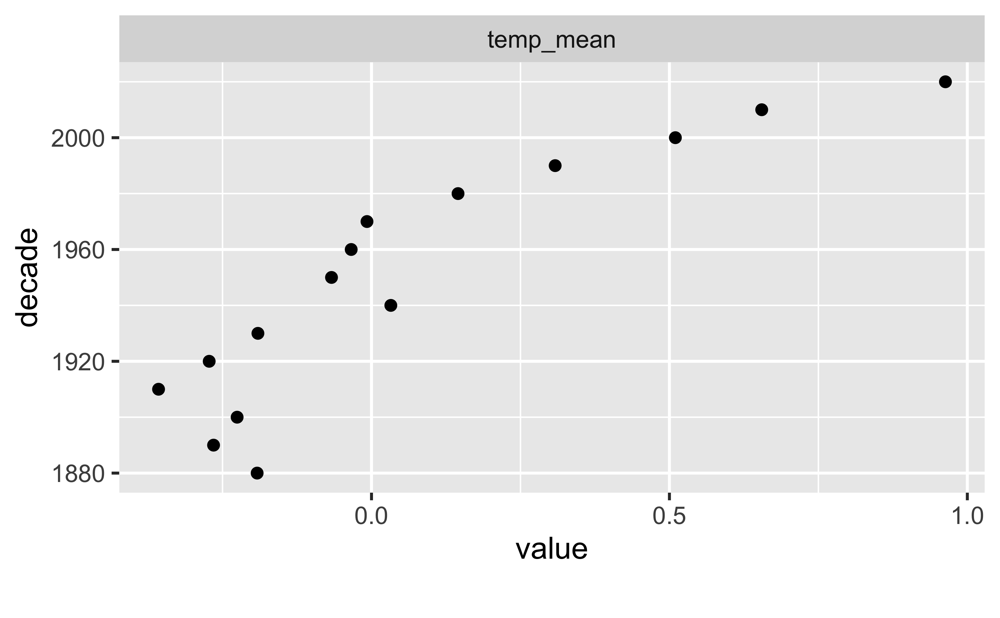
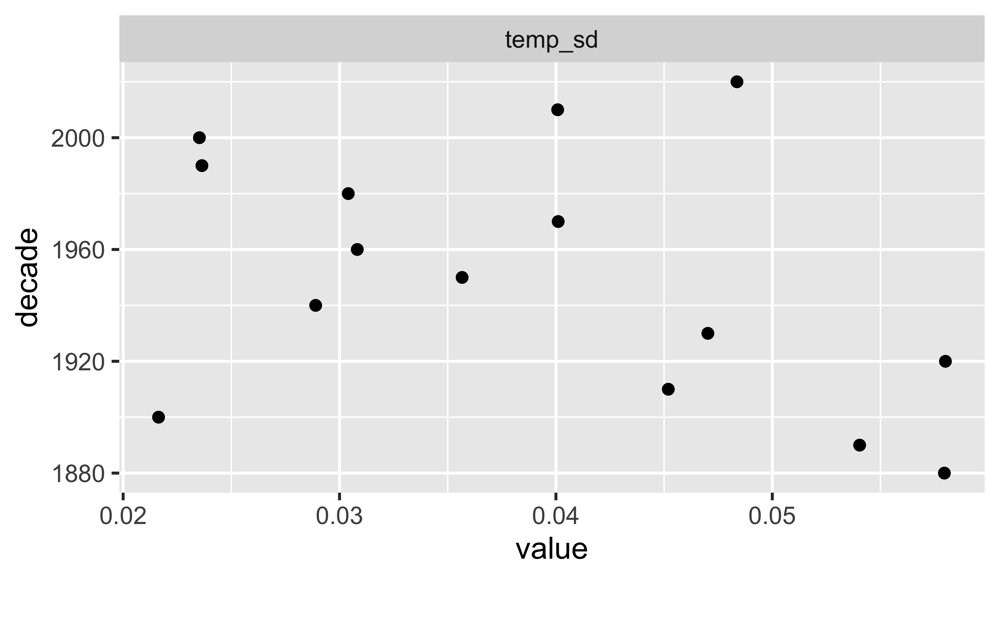

library(tidyverse)nasa06
data
eda
lagemaße
string
Aufgabe
Viele Quellen berichten Klimadaten unserer Erde, z.B. auch National Aeronautics and Space Administration - Goddard Institute for Space Studies.
Von dieser Quelle beziehen wir diesen Datensatz.
Die Datensatz sind auf der Webseite wie folgt beschrieben:
Tables of Global and Hemispheric Monthly Means and Zonal Annual Means
Combined Land-Surface Air and Sea-Surface Water Temperature Anomalies (Land-Ocean Temperature Index, L-OTI)
The following are plain-text files in tabular format of temperature anomalies, i.e. deviations from the corresponding 1951-1980 means.
Global-mean monthly, seasonal, and annual means, 1880-present, updated through most recent month: TXT, CSV
Starten Sie zunächst das R-Paket tidyverse falls noch nicht geschehen.
Importieren Sie dann die Daten:
data_path <- "https://data.giss.nasa.gov/gistemp/tabledata_v4/GLB.Ts+dSST.csv"
d <- read_csv(data_path, skip = 1)Wir lassen die 1. Zeile des Datensatzes aus (Argument skip), da dort Metadaten stehen, also keine Daten, sondern Informationen (Daten) zu den eigentlichen Daten.
Aufgaben
- Fassen Sie immer 10 Jahre (eine Dekade) an Jahren zusammen.
- Präsentieren Sie gängige Statistiken pro Dekade für alle Monate.
Hinweise:
- Sie müssen zuerst die Dekade als neue Spalte berechnen.
- Treffen Sie Annahmen, wo nötig.
- Beachten Sie die Hinweise.
Lösung
Tabelle in die Lang-Form bringen:
d_long <-
d %>%
select(Year, Jan:Dec) %>%
mutate(across(Jan:Dec, as.numeric)) %>%
pivot_longer(cols = Jan:Dec, values_to = "temp", names_to = "month") Ein Blick in die Tabelle:
head(d_long)| Year | month | temp |
|---|---|---|
| 1880 | Jan | -0.19 |
| 1880 | Feb | -0.25 |
| 1880 | Mar | -0.09 |
| 1880 | Apr | -0.17 |
| 1880 | May | -0.10 |
| 1880 | Jun | -0.21 |
Dekade berechnen:
d_long2 <-
d_long %>%
mutate(decade = round(Year/10) * 10)tail(d_long2) # letzten paar Zeilen der Tabelle "d_long2"| Year | month | temp | decade |
|---|---|---|---|
| 2025 | Jul | 1.02 | 2020 |
| 2025 | Aug | 1.15 | 2020 |
| 2025 | Sep | 1.24 | 2020 |
| 2025 | Oct | 1.22 | 2020 |
| 2025 | Nov | NA | 2020 |
| 2025 | Dec | NA | 2020 |
d_summarized <-
d_long2 %>%
group_by(decade, month) %>%
summarise(temp_mean = mean(temp, na.rm = TRUE),
temp_sd = sd(temp, na.rm = TRUE))| decade | month | temp_mean | temp_sd |
|---|---|---|---|
| 1880 | Apr | -0.2150000 | 0.1742125 |
| 1880 | Aug | -0.1566667 | 0.1094836 |
| 1880 | Dec | -0.1900000 | 0.1188276 |
| 1880 | Feb | -0.1716667 | 0.1909363 |
| 1880 | Jan | -0.2066667 | 0.2427070 |
| 1880 | Jul | -0.1783333 | 0.1301409 |
Zum Visualisieren gibt es meist viele Wege. Hier ist ein Weg mit ggplot2:
d_summarized %>%
ggplot(aes(x = decade, y = temp_mean)) +
geom_point(color = "darkblue") +
geom_errorbar(aes(ymin = temp_mean - temp_sd, ymax = temp_mean + temp_sd)) +
geom_line(alpha = .7) +
facet_wrap(~ month) +
labs(caption = "Fehlerbalken zeigen plus/minus 1 SD")
Monate zu einem Jahreswert zusammen:
d_summarized2 <-
d_summarized %>%
group_by(decade) %>%
summarise(temp_mean = mean(temp_mean),
temp_sd = sd(temp_sd))
d_summarized2| decade | temp_mean | temp_sd |
|---|---|---|
| 1880 | -0.1950000 | 0.0584524 |
| 1890 | -0.2719444 | 0.0533127 |
| 1900 | -0.2360606 | 0.0216782 |
| 1910 | -0.3684259 | 0.0455873 |
| 1920 | -0.2837121 | 0.0584054 |
| 1930 | -0.1935185 | 0.0472359 |
| 1940 | 0.0291667 | 0.0296372 |
| 1950 | -0.0686111 | 0.0354246 |
| 1960 | -0.0344697 | 0.0308730 |
| 1970 | -0.0068519 | 0.0396503 |
| 1980 | 0.1440152 | 0.0304904 |
| 1990 | 0.3066667 | 0.0236722 |
| 2000 | 0.5066667 | 0.0236554 |
| 2010 | 0.6515741 | 0.0417118 |
| 2020 | 0.9997652 | 0.0359089 |
Alternativ können Sie zum Visualisieren der Daten z.B. das Paket ggpubr nutzen:
library(ggpubr)
ggscatter(d_summarized2, x = "decade", y = "temp_mean", add = "reg.line")
Oder auch mit den Facetten pro Monat:
ggscatter(d_summarized, x = "decade", y = "temp_mean", add = "reg.line",
facet.by = "month")
Ähnlich sieht es mit DataExplorer aus:
library(DataExplorer)
d_summarized2 |>
select(temp_mean, decade) |>
plot_scatterplot(by = "decade")
d_summarized2 |>
select(temp_sd, decade) |>
plot_scatterplot(by = "decade")

Die weltweilte Temperatur steigt. Bleibt u.a. die Frage, ob eine lineare Funktion angemessen ist, oder ob die Steigung nicht vielleicht prozentual steigt (das wäre eine exponenzielle Steigerung)?
Falls Sie Teile der R-Syntax nicht kennen: Machen Sie sich nichts daraus. 😄
Categories:
- data
- eda
- lagemaße
- string